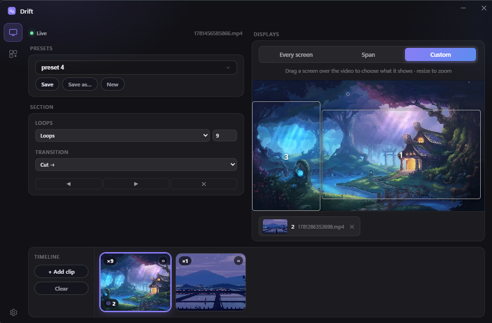

Turn your own videos into a living desktop. Sequence clips on a timeline, lay them out across every monitor. Free, with no account and no subscription.
WINDOWS 11 · 64-BIT · FREE · NO ACCOUNT
A normal wallpaper just sits there. Drift plays your own video behind your icons — a single clip or a whole sequence — by attaching a muted player to the Windows desktop layer. Bring your own files; there's no account and nothing is uploaded.
Everything you'd want from a wallpaper engine, nothing you wouldn't.
Mirror one video on every screen, stretch a single video across them all, or use the visual layout editor to crop a different region of the video to each monitor.
Sequence several clips with per-clip loop counts, timed holds, and cut or crossfade transitions. Group clips together to repeat a whole run.
Save videos into Drift's own library so they're always on hand, and store whole compositions — timeline plus display layout — as named presets you can switch between in a click.
Drift is a small Tauri app that leans on your system's native video playback rather than a heavy game engine. It's muted by default, lives in the system tray, can launch quietly at startup, and pauses itself when something full-screen is running or you're on battery — so it stays out of the way when you need the machine.
A dark, glassy control window — timeline and displays on one screen, settings a click away.

Free, with no account and no subscription. Drift installs just for your user — no admin rights needed.
download Download for WindowsWINDOWS 11 · 64-BIT · v0.1.0